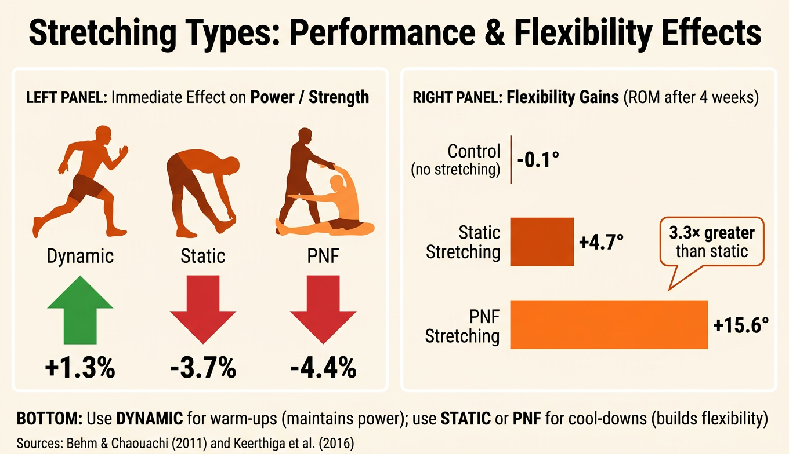

Why Cool Down?
A cool down is a series of exercises performed after physical activity to help the body return to its resting state. Just as a warm up prepares the body for exercise, a cool down helps the body transition back to normal — yet it is one of the most commonly neglected parts of a training session.
A good cool down should last between 5 and 10 minutes. It reduces the risk of injury, helps clear waste products from the muscles, and gives the performer time to mentally wind down after intense activity.
Cool downs are just as important as warm ups. Stopping exercise suddenly without cooling down can cause dizziness, fainting, and increased muscle soreness in the days that follow.
Key Components of a Cool Down
An effective cool down has three main components, each serving a different purpose in helping the body recover:
1. Pulse Lowering / Light Exercise
The first stage involves gentle, low-intensity exercise such as light jogging, walking, or easy cycling. The purpose is to gradually reduce the heart rate back towards its resting level. This keeps blood flowing through the muscles and prevents blood pooling — a condition where blood collects in the veins of the legs, reducing blood flow to the brain and potentially causing dizziness or fainting.
2. Static Stretching
Static stretching involves holding a stretch in a fixed position for 15–30 seconds. This is most effective during a cool down because the muscles are still warm and therefore more flexible. Stretches should target the major muscle groups used during the activity — for example, hamstrings, quadriceps, and calves after a football match. Static stretching helps maintain and improve flexibility over time.
3. Deep Breathing / Relaxation
The final stage involves controlled, deep breathing to help the body relax. This lowers the heart rate further, calms the nervous system, and signals to the body that the period of intense activity is over. It also helps begin the recovery process both physically and mentally.
Although warm ups and cool downs are both essential parts of any training session, they serve opposite purposes. A warm up prepares the body for exercise by gradually increasing heart rate, body temperature, and blood flow to the muscles. It uses dynamic stretching (movement-based) to increase the range of motion. A cool down does the reverse — it helps the body return to its resting state by gradually decreasing heart rate, removing waste products from the muscles, and using static stretching (held positions) to maintain flexibility while the muscles are still warm. Think of the warm up as “switching on” the body and the cool down as “switching off.”

Physiological Benefits of a Cool Down
The physical benefits of a cool down are well documented. By continuing to move at a low intensity after exercise, the body can recover more efficiently:
- Gradual reduction in heart rate — prevents blood pooling in the legs, which can cause dizziness or fainting if exercise stops suddenly.
- Removal of lactic acid and waste products — maintaining blood flow helps flush lactic acid from the muscles, reducing soreness and the risk of DOMS (Delayed Onset Muscle Soreness).
- Maintains blood flow to muscles — delivers oxygen and nutrients needed for muscle tissue repair and recovery.
- Reduces muscle stiffness — static stretching while muscles are warm keeps them flexible and prevents tightness building up.
- Prevents dizziness and fainting — a gradual reduction in intensity ensures blood continues circulating to the brain rather than pooling in the extremities.
Lactic acid is a waste product produced during anaerobic exercise. If not removed, it builds up in the muscles and contributes to DOMS — the soreness you feel 24–72 hours after intense activity. A proper cool down helps the body clear lactic acid more quickly.
Psychological Benefits of a Cool Down
The benefits of cooling down are not only physical. There are important mental and emotional advantages too:
- Time to reflect on performance — athletes can think about what went well and what to improve while the session is still fresh in their minds.
- Gradual mental transition — helps the performer move from the high-intensity mindset of competition back to a normal, relaxed state.
- Reduces stress and anxiety — controlled breathing and gentle movement lower cortisol levels and promote a sense of calm after intense activity.
- Team bonding opportunity — in team sports, cooling down together provides time for communication, encouragement, and building group cohesion.
Consequences of Not Cooling Down
Skipping a cool down might save a few minutes, but the consequences can affect performance and wellbeing for days afterwards:
- DOMS (Delayed Onset Muscle Soreness) — muscle soreness and stiffness that develops 24–72 hours after exercise. Without a cool down to help remove lactic acid, the severity of DOMS increases significantly.
- Blood pooling — if exercise stops suddenly, blood remains in the working muscles rather than being redistributed around the body. This reduces blood flow to the brain and can cause dizziness, light-headedness, or fainting.
- Increased muscle stiffness and reduced flexibility — muscles that are not stretched after exercise tighten up as they cool, leading to a loss of range of motion over time.
- Slower recovery time — without the benefits of a cool down, the body takes longer to repair muscle tissue and return to its pre-exercise state, meaning the performer is not ready as quickly for the next training session or match.